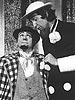

Joey D'Auria began his theatrical career performing in summer stock in Vermont. These early theatrical experiences shaped his love of theater, ensemble performing and comedy and helped establish his niche as a character actor.
As a student in New York City's
American Academy of Dramatic Arts, D'Auria used the skills honed in summer stock in his studies of the classical works of Shakespeare, Wilde, Shaw and Thornton Wilder.
Upon gaining his
Actor's Equity card following graduation, D'Auria went to work in Dinner Theater, eventually arriving in Los Angeles, where he performed in improvisational theater, stand-up comedy and Musical Revues.
Working for
MAGIC CASTLE creator Milt Larsen at his downtown Los Angeles VARIETY ARTS CENTER, D'Auria starred as the title character in an original musical comedy THE WHOOPEE KID by Larsen and Academy Award winning composer
Richard Sherman ("Mary Poppins," "Chitty Chitty Bang Bang").
D'Auria became the Master of Ceremonies and Host of THE TIN PAN ALLEY ROOM where he co-founded and was a featured player with the VARIETY ARTS RADIO THEATER recreating classic radio shows from the 30's, 40's and 50's.

While at the V.A.C., Joey also performed in numerous one man shows as W. C. Fields and Ed Wynn
and played Joseph Webber (the shorter member of the turn-of-the-twentieth century, knock-a-bout comedy team Webber & Fields) in a musical revue based on their comedy.
Later D'Auria worked at
UNIVERSAL STUDIOS in the CASTLE DRACULA tour attraction as Count Dracula's bug-eating assistant RENFIELD.
During these years he also made appearances on television's ALICE starring Linda Lavin
and performed in stage productions of "THE WATER ENGINE" by David Mamet and Moliere's "THE MISER" with the acclaimed
ODYSSEY THEATER.
As a frequent contributor to Chuck Barris's GONG SHOW, D'Auria performed as a variety of off-beat characters. The most memorable was DR. FLAME-O
which not only garnered a Gong Show Trophy for D'Auria, but brought him back to the GONG SHOW repeatedly. His Dr. Flame-o was a featured performer on Barris's prime time RAH-RAH SHOW as well as other T.V. variety shows. In fact, Dr. Flame-o was such a hit that in 1982 D'Auria was invited on The Tonight Show with Johnny Carson.
In 1984 WGN-TV's legendary Bob Bell retired from Chicago's BOZO SHOW after twenty-three years on the air.
After a national search, D'Auria was hired to take over the BOZO SHOW. Joey performed Bozo for 17 years on
WGN-TV, receiving five Mid-west Emmy Awards in addition to countless nominations for both his performance and comedy writing.
During his years in Chicago, Joey worked as much as time allowed in commercials both on camera and
voice over and starred as Max Prince in a long run of Neil Simon's "LAUGHTER ON THE 23RD FLOOR" at the
Briar Street Theater. During this period he even found time to portray a snooty art critic in a
SAG experimental film (working title: "A PIECE OF WORK").

Returning to Los Angeles after a seventeen year absence, D'Auria performed with the
AMERICAN RUSSIAN THEATRICAL ALLIANCE in Chekov's "THE PROPOSAL" and reacquainted himself with many friends in the voice over and looping industry. In the fall of 2002 he took off for London for a two month writing assignment with S.E.E. Inc. as the head writer for the Hyde Park exhibition of STAR TREK, THE ADVENTURE, also serving as Show Director for THE BRIDGE EXPERIENCE, an interactive event between cast and audience.
Back in L.A., Joey was featured in an international on-camera commercial for "Cornetto" ice cream, which will air in Italy, France, Germany and Israel. He's also taken time to hone his film craft in numerous experimental film projects.
Collaborating with different partners in writing for film, television and stage projects, D'Auria has recently co-written a hilarious CGI science-fiction parody titled: DICK DANGER SPACE MERCENARY.
Joey D'Auria is always searching for assignments in radio, television, stage, film or commercials, that are as varied as his past experience suggests.
Contact Joey


)
){kind=link}
){kind=link}
){kind=link}
){kind=link}
){kind=link}
){kind=link}
){kind=link}
){kind=link}
){kind=link}
){kind=link}
){kind=link}
){kind=link}
){kind=link}
){kind=link}
){kind=link}
){kind=link}
){kind=link}
){kind=link}
){kind=link}
){kind=link}
){kind=link}
){kind=link}
){kind=link}
){kind=link}
){kind=link}